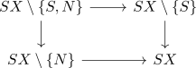
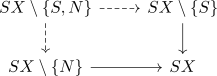
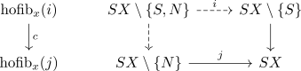
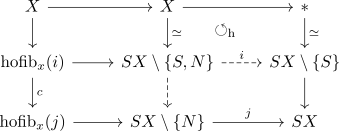
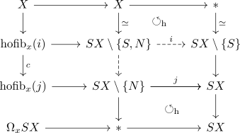

freudenthal suspension theorem
Proposition
Let $(X,x_0)$ be a well pointed space Suppose $X$ is a p-connected space, then the unit
\begin{align*}
u_x: X \rightarrow \Omega \Sigma X
\end{align*}
is \(2p+1\)-connected
In other words:
- if up to $\pi_{n}(X)$ is trivial (e.g. $S^n$ is $n-1$ connected).
- then up to $\pi_{2n}(X) \rightarrow \pi_{2n+1}(\Omega X)$ is an isomorphism and $\pi_{2n+1}(X) \rightarrow \pi_{2n+1}(\Omega X)$ is a surjection.
see:
Proof
Consider the open cover

Then by suspension of a space coverable by two open pointed contractible sets it follows that
\begin{align*}
SX \setminus \{S,N\} \rightarrow X \simeq *
\end{align*}
is \(p-connected\)
Then both dashed

are epimorphisms on the homotopy groups, hence the maps are \(p+1\)-connected
Consider

by the homotopy excision theorem the map
\begin{align*}
c: \mathrm{hofib}_{x}(i) \rightarrow \mathrm{hofib}_{x}(j)
\end{align*}
is $2p + 1$ connected.
Writing

moreover
\begin{align*}
X \rightarrow \mathrm{hofib}_x(\iota)
\end{align*}
is a weak homotopy equivalence

After choosing a homotopy, we get an induced map
which is homotopic to the unit map
Also
\begin{align*}
X \rightarrow \Omega S X \rightarrow \Omega_x \Sigma X
\end{align*}
is homotopic to $u_x$
Therefore
\begin{align*}
u_x: X \rightarrow \
\end{align*}